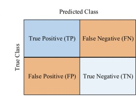
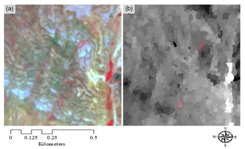

7 Classification II
7.1 Summary
This week’s content continues the topic of classification in remote sensing by covering the topics of object-based image analysis, sub-pixel analysis, accuracy assessment and cross-validation.
Before we dive in, it’s important to note that there’s data that comes pre-classified, such as the following:
- GlobeLand30 - 30m for 2000, 2010 and 2020;
- European Space Agency’s (ESA) Climate Change Initiative (CCI) annual global land cover (300 m) (1992-2015);
- Dynamic World - near real time 10m;
- MODIS;
- Goggle building data.
7.1.1 Object-based image analysis (OBIA)
Rather than examining individual cells, we analyse shapes formed by grouping together cells that exhibit similar characteristics (homogeneity) or differences (heterogeneity) i.e., superpixels. The most common method to approach this is SLIC (Simple Linear Iterative Clustering) algorithm for superpixel generation by clustering pixels based on color similarity and spatial proximity; it measures compactness (i.e., balance between physical distance and colour) and classifies objects based on their average value.
7.1.2 Sub-pixel analysis (also called sub-pixel classification, spectral mixture analysis (SMA), linear spectral unmixing)
Sub-pixel analysis addresses the question of whether it should be classified singularly or should the proportions be computed when dealing with a pixel containing multiple land cover types. This classifier calculates the proportion or abundance of land cover within each pixel.
Considerations to keep in mind:
- Pixel purity;
- Number of end members;
- Multiple endmember spectral analysis (MESMA).
7.1.3 Accuracy assessment
As a common practice in machine learning, we need to calculate accuracy of our classifier’s outputs.
Accuracy assessments we are concerned with in remote sensing will be derived from the confusion matrix:

Producer’s accuracy is defined as the ratio of correctly classified pixels (TP) to the total ground truth data (TP + FN):
\[PA= \frac{TP}{TP+FN}\]
User’s accuracy is defined as the proportion of correctly classified pixels (TP) out of all pixels classified as a specific land cover (TP + FP):
\[UA= \frac{TP}{TP+FP}\]
Finally, the overall accuracy represents the collective proportion of correctly classified pixels (TP + TN) across all land cover types (TP + FP + FN + TN):
\[OA= \frac{TP+TN}{TP+FP+FN+TN}\]
Note: there isn’t a sole correct option for accuracy measurements.
Kappa measures the agreement between classifications and labeled data, assessing accuracy beyond chance results.
The F1-Score (F Measure) integrates both recall (PA) and Precision (UA):
\[F1= \frac{2 * UA * PA}{UA + PA}\]
which also equals
\[F1= \frac{TP}{TP+1/2*(FP+FN)}\]
Approaches to take in order to make sure our accuracy assessment is truthful:
- Train and test split (roughly 70% train - 30% test data split).
- Cross validation - or take it to the extremes and opt for leave one out cross validation (only for smaller datasets).
- Spatial cross validation - to address the issue of potential spatial autocorrelation - partition the folded data spatially, with folds used for cross-validation. If not addressed, the accuracy assessment will claim that classifier performs more precisely than it would do on unseen data in reality.
7.2 Applications
The application section will review literature where the two new classifier types discussed this week (OBIA and sub-pixel analysis) have been utilised.
A study by Park et al. (2020) aimed to enhance maritime safety through the detection and monitoring of vessels using airborne hyperspectral imaging. Employing pixel-based mixture techniques and objective ellipse fitting methods, researchers accurately detected and estimated the sizes of marine vessels, particularly fishing boats and yachts. Through various spectral analyses and dimensionality reduction techniques like principal component analysis, the study successfully detected vessels using algorithms like N-FINDR, PPI, ICA, and VCA. The application of these techniques resulted in high probabilities of vessel detection, with a probability of detection (POD) of 96.40% and a false alarm ratio (FAR) of 4.30%, aiding in preventing maritime accidents by providing efficient monitoring over wide coastal areas at high resolutions.
Another study by Blaschke, Feizizadeh, and Holbling (2014) had a primary objective to develop a semi-automated object-based image analysis (OBIA) methodology for landslide detection and delineation. By integrating various satellite imagery features such as NDVI, brightness, and textural features with DEM derivatives and GLCMs, landslides were accurately identified within a study area in north-western Iran. The methodology, validated against a landslide inventory database, achieved a high overall accuracy of 93.07%, demonstrating the effectiveness of OBIA in incorporating heterogeneous parameters for landslide classification. This study highlights the potential of GEOBIA as a valuable tool in remote sensing and geographic information science, offering improved accuracy and efficiency in natural disaster prevention and management efforts.
